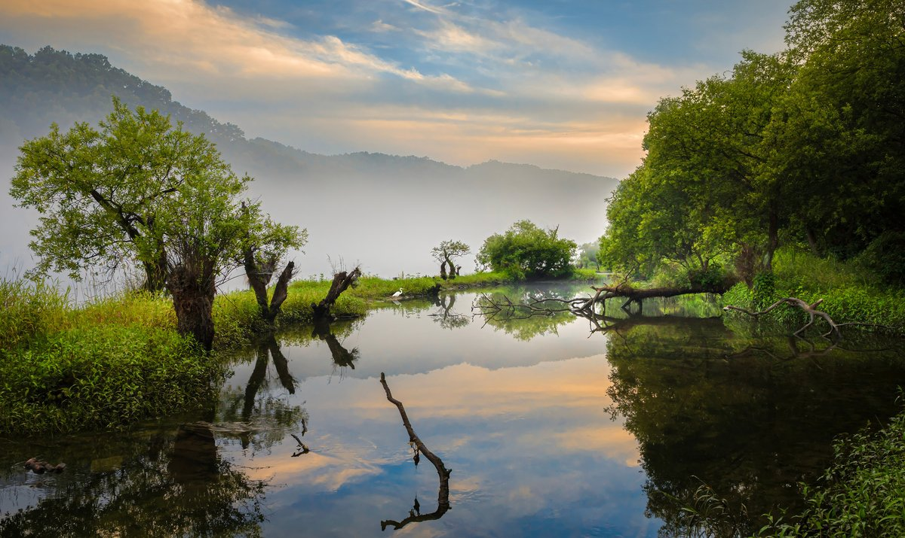

로하스의 기다림
대전 대청호
로하스 촬영은 수위가 중요합니다. 방류 수량이 적으면 로하스의 바닥이 드러나고, 방류량이 많으면 주변의 수목들이 물에 잠겨 아름다움을 숨겨 버립니다. 이날은 마침 물이 막 들어오기 시작한 때였습니다.
장화를 신고 물에 들어가 자리를 잡았습니다. 앉아 있던 새 한 마리가 인기척에 날아올랐고, 다시 돌아오기까지 삼십 분을 기다렸습니다. 돌아온 새는 수면 아래를 들여다보며 올라올 물고기를 기다리고 있었습니다.
기다린 것은 저만이 아니었습니다.